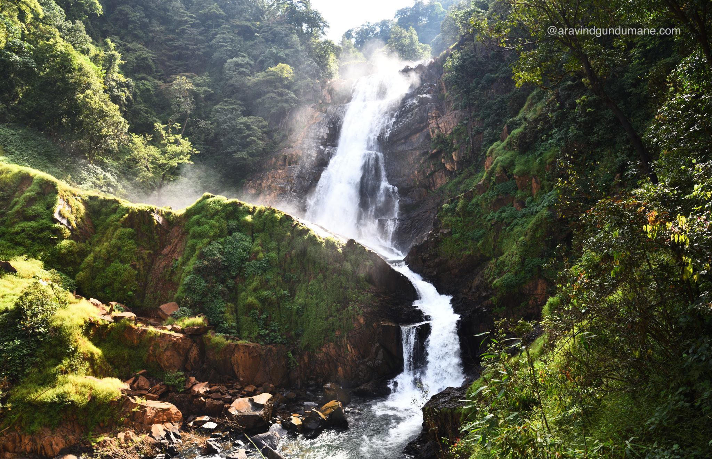
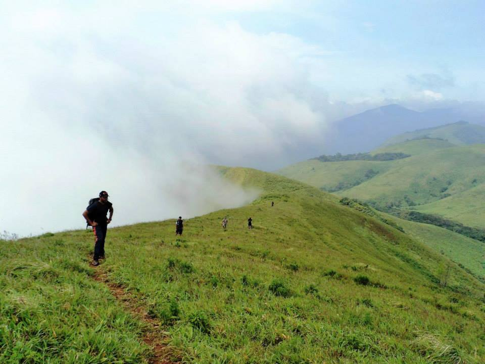
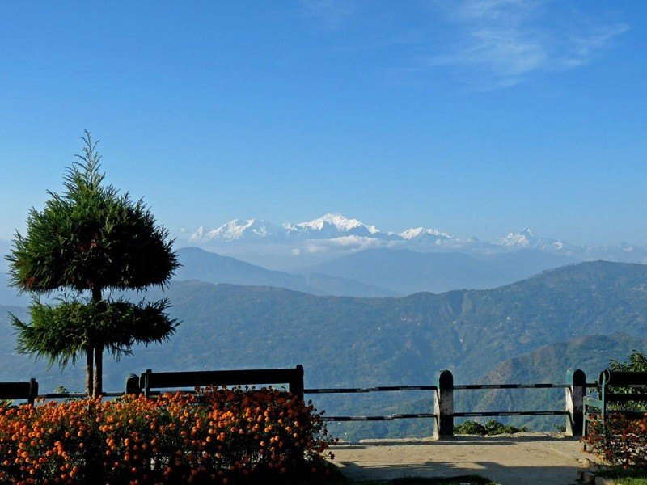
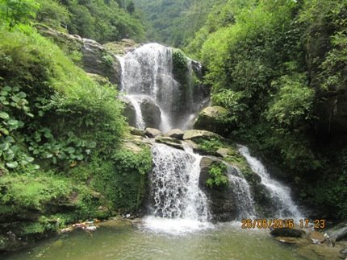
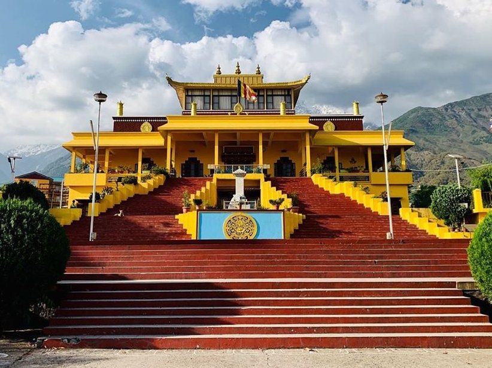
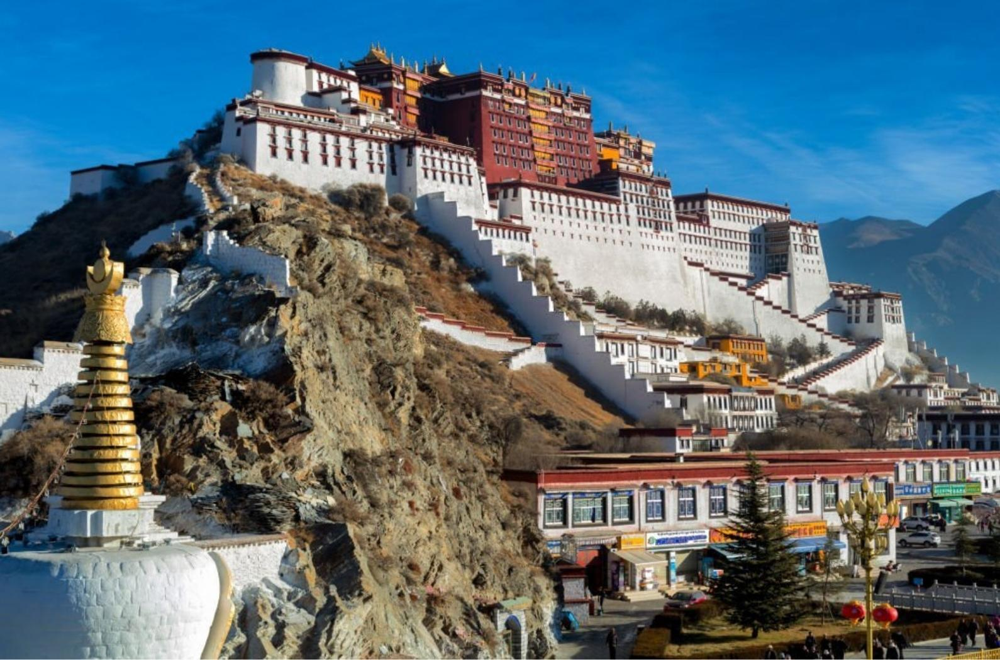
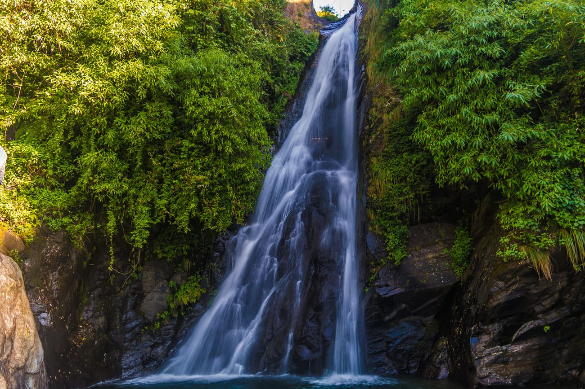
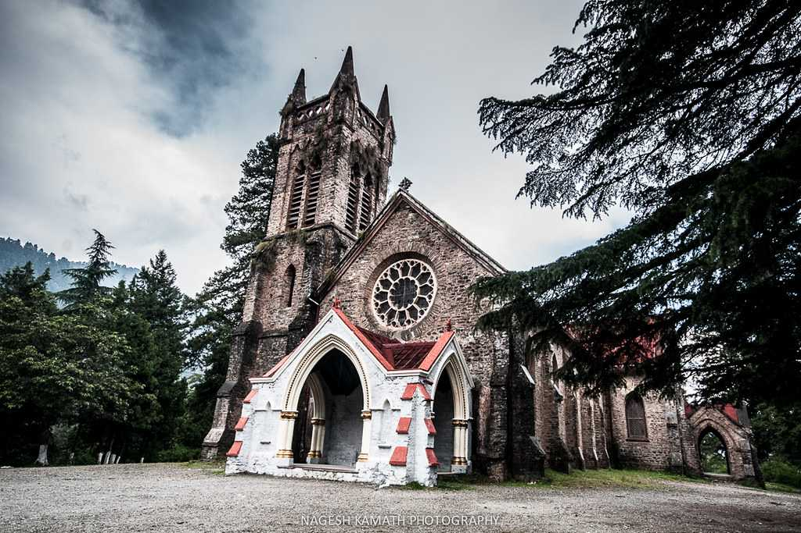
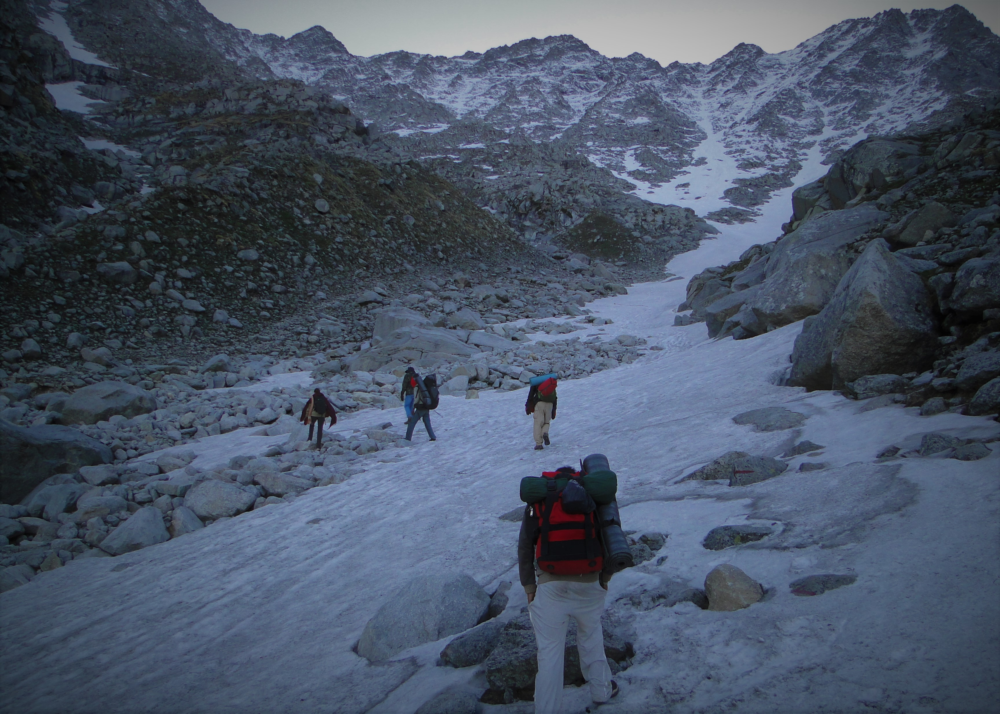
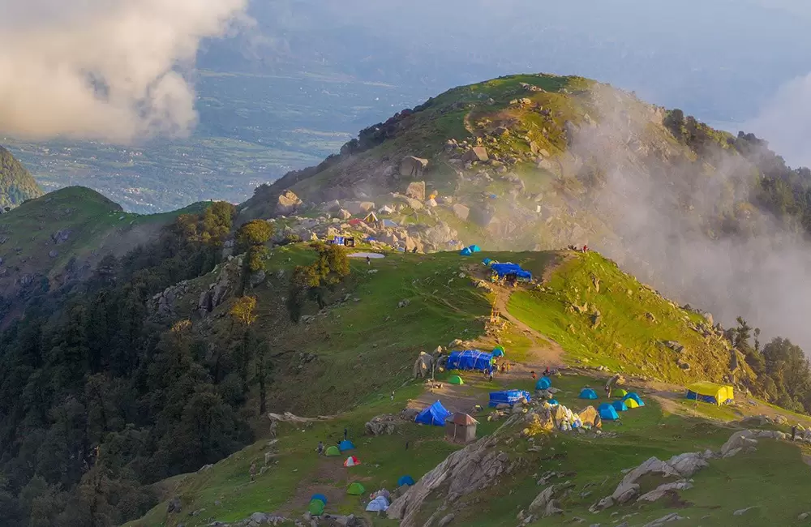

Burude Falls, near Siddapur, Karnataka, is a popular trekking destination known for its five-step
waterfall and scenic
beauty. Key points to consider when visiting include: avoiding the monsoon
season due to slippery
trails and leeches,
wearing appropriate trekking shoes and gear, and ensuring
you have sufficient food and water.
1. Monsoon Season Hazards:
The monsoon season (June to September) makes the trail slippery and challenging, increasing the
risk
of falls and leech
infestations.
2. Leech Precautions:
The area is known for leeches, so it's essential to apply leech repellent (lime or calcium solutions
are recommended)
and check your legs frequently during the trek, according to Holidify
and Tripadvisor.
3. Trekking Gear and Shoes:
Sturdy, waterproof trekking shoes with good grip are crucial for navigating the rocky and
potentially muddy terrain,
according to Holidify.
4. Carry Essentials:
Pack sufficient water, snacks, energy drinks, and a first-aid kit to stay hydrated and energized
throughout the trek,
recommends Tripadvisor.
5. Safety in Numbers:
It's advisable to trek with a group or an authorized tour operator, as the area can be remote and
cell phone reception
is weak, notes Karnataka Tourism.

Brahmagiri Peak, a part of the Brahmagiri Wildlife Sanctuary on the Karnataka-Kerala border, is known
for its trekking,
diverse wildlife, and scenic beauty. It is a popular destination for nature lovers and adventure
enthusiasts, offering a
challenging trek with rewarding views.
1. Trekking Destination:
Brahmagiri Peak is a popular trekking destination, offering a moderately challenging trek that takes
around 3-4 hours to
reach the summit.
2. Diverse Wildlife:
The Brahmagiri Wildlife Sanctuary is home to various animals, including elephants, leopards, and
numerous bird
species.
3. Scenic Beauty:
The trek offers stunning views of the surrounding forests, valleys, and the Western Ghats.
4. Religious Significance:
The trek passes by Thirunelli Temple, an ancient temple dedicated to Lord Vishnu, adding a cultural and
spiritual
dimension to the experience.
5. Starting Point:
The trek typically begins from the Forest Department camp shed at Thirunelli, a town in Kerala.

Tiger Hill, a peak in Darjeeling, India, is famous for its panoramic views of the Himalayas,
including Mount
Kanchenjunga and Mount Everest. It's a popular spot to witness the sunrise, with
the first rays
illuminating the peaks.
Reaching the summit requires an early morning trip and
comfortable shoes for the final walk from the
parking area.
1. Stunning Sunrise Views:
Tiger Hill is renowned for its breathtaking sunrise views, particularly of Mount Kanchenjunga and,
on a clear day, Mount
Everest.
2. Early Morning Trip:
To witness the sunrise, it's essential to start your journey early, ideally arriving at the
summit
around 4:00-4:30 am,
as the area gets crowded.
3. Cold Temperatures:
Temperatures at Tiger Hill can drop significantly, especially in the early mornings, so warm
clothing, including
jackets, gloves, and hats, is crucial.
4. Trekking and Walking:
While vehicles can reach a parking area, the final ascent to the summit involves a walk.
Comfortable
shoes are
recommended for this portion of the trip.
5. Weather Considerations:
The weather at Tiger Hill can be unpredictable, so it's wise to check the forecast and be prepared
for changes,
including carrying an umbrella or raincoat.

Rock Garden and Ganga Maya Park, located near Darjeeling, are popular tourist destinations known for
their natural
beauty and man-made structures. Key points include the terraced design of Rock Garden with a natural
waterfall, the
stream and boating lake at Ganga Maya Park, the lush greenery and flower gardens, and the opportunity to
enjoy Gorkha
folk dances.
1. Terraced Design & Waterfall:
Rock Garden is a man-made marvel with a terraced layout built around a natural waterfall.
2. Ganga Maya Park's Stream and Lake:
Ganga Maya Park features a stream flowing through it, as well as a lake where boating is available.
3. Greenery and Flower Gardens:
Both parks boast lush greenery, flower gardens, and sitting areas, offering a relaxing atmosphere.
4. Cultural Performances:
Ganga Maya Park often hosts Gorkha folk dances, showcasing the local culture.
5. Picnic Spot:
The parks are popular spots for families and groups to enjoy picnics amidst the scenic surroundings.

Namgyal Monastery, located in McLeod Ganj, Dharamshala, is the personal monastery of the
14th Dalai
Lama and is a
significant center for Tibetan Buddhism. It's known for its role in
preserving Tibetan traditions,
its serene
atmosphere, and its beautiful architecture.
1. Personal Monastery of the Dalai Lama:
It serves as the personal monastery of the 14th Dalai Lama, making it a central hub for his
spiritual
and temporal
activities.
2. Preservation of Tibetan Culture:
The monastery plays a vital role in preserving Tibetan Buddhist traditions, including rituals, arts,
and the Tibetan
language.
3. Center for Tantric Practices:
Namgyal Monastery is known for its practice of various tantric traditions, including Kalachakra,
Yamantaka,
Chakrasamvara, Vajrakilaya, and Guhyasamaja.
4. Architectural Beauty:
The monastery features traditional Tibetan architecture, with vibrant colors, intricate designs,
and
a serene
atmosphere, making it visually appealing and conducive to meditation.
5. Accessibility and Serenity:
Located in McLeod Ganj, it's easily accessible for visitors, offering a peaceful environment
for
reflection and
experiencing Tibetan Buddhist practices.

The Dalai Lama Temple, also known as Tsuglagkhang Complex, is a significant site in Dharamshala, India.
It's a place of
religious, cultural, and historical importance for Tibetan Buddhism and the Tibetan community in exile.
Key points
include its role as the Dalai Lama's residence, the presence of the Namgyal Monastery, the Tibetan
Museum, and the
Kalachakra Temple. The complex also houses the Library of Tibetan Works and Archives.
1. Residence of the Dalai Lama:
The temple serves as the residence of the 14th Dalai Lama, making it a central location for Tibetan
Buddhism and a focal
point for the Tibetan community.
2. Namgyal Monastery:
The temple complex includes the Namgyal Monastery, which is the Dalai Lama's personal monastery and the
largest Tibetan
monastery outside of Tibet.
3. Tibetan Museum:
The temple complex houses the Tibet Museum, which showcases Tibetan culture, history, and the struggle
for Tibetan
independence through various exhibits and artifacts.
4. Kalachakra Temple:
The Kalachakra Temple is another significant structure within the complex, dedicated to the Kalachakra
(Wheel of Time)
mandala, a complex Buddhist concept.
5. Place of Learning and Prayer:
The complex is a center for religious practice and learning, with monks engaging in daily prayers,
rituals, and
teachings. It attracts visitors from all over the world seeking spiritual guidance and cultural
immersion.

Bhagsu Falls, located near McLeod Ganj in Himachal Pradesh, is a popular tourist spot known for
scenic beauty and
the nearby Bhagsunag Temple. Key points include its location behind the temple,
the trek involved in
reaching the falls.
1. Location and Accessibility:
Bhagsu Falls is situated near McLeod Ganj, a popular hill station, and is easily accessible from
both McLeod Ganj and
Dharamshala. It's a short trek from the Bhagsunag Temple, which is also
a significant
attraction.
2. Scenic Beauty:
The waterfall is known for its picturesque setting and is surrounded by lush greenery, making it a
great spot for nature
lovers and photographers. The cascading water, especially during the monsoon
season, is a sight to
behold.
3. Recreational Activities:
Visitors can enjoy a refreshing dip in the pool at the base of the waterfall, relax and soak in the
scenic beauty, or
have a picnic with friends and family.
4. Bhagsunag Temple:
The Bhagsunag Temple, dedicated to Lord Shiva, is located near the waterfall and is an important
pilgrimage site.
5. Trekking and Trails:
The trek to the waterfall involves stairs and uphill paths, offering a moderate level of difficulty and
providing scenic
views of the surrounding hills.

St. John in the Wilderness Church, located near McLeod Ganj in Dharamshala, is a historic Anglican
church known for its
Neo-Gothic architecture, stained-glass windows, and peaceful setting amidst deodar trees. It's a popular
tourist
destination and a place of historical and religious significance.
1. Historical Significance:
The church, built in 1852, is one of the oldest structures in Dharamshala. It was dedicated to St. John
the Baptist.
2. Architectural Style:
It's a fine example of Neo-Gothic architecture, featuring pointed arches, stained glass windows, and a
bell tower.
3. Stained Glass:
The church's stained-glass windows are particularly noteworthy, especially those donated by Lady Elgin,
adding to its
aesthetic appeal.
4. Final Resting Place:
It's the final resting place of Lord Elgin, a former Viceroy of India, and his grave is a memorial
within the church
grounds.
5. 1905 Earthquake:
The church survived the 1905 Kangra earthquake, though its bell tower was damaged. A replacement bell
was later
installed, brought from England in 1915.
6. Surroundings and Ambiance:
The church is nestled among deodar trees, contributing to its "in the wilderness" ambiance. It offers a
peaceful and
serene atmosphere, with a cemetery surrounding the church on three sides.

The Indrahar Pass trek is a popular moderate-difficulty trek in the Dhauladhar range, known for
its
stunning views of
the Himalayas and diverse landscapes. Key highlights include panoramic
views of the Dhauladhar and
Pir Panjal ranges, a
visit to the Lahesh Caves, and encounters with
local culture and wildlife.
1. Stunning Scenery:
The trek offers breathtaking views of the Dhauladhar and Pir Panjal ranges, including famous peaks
like Moon and
Arthur's Seat. You'll also encounter lush forests, meadows, waterfalls, and potentially
even
snow-covered
landscapes.
2. Moderate Difficulty:
This trek is generally considered moderately challenging, with some steep climbs and descents.
Good
physical fitness and
acclimatization to high altitudes are recommended.
3. Best Time to Visit:
The ideal time to trek is during the pre-monsoon (May-June) and post-monsoon (September-
October)
seasons. Avoid the
monsoon season due to heavy rainfall and potential landslides.
4. Camping and Accommodation:
The trek includes camping in scenic locations like Lahesh Caves, which is a natural rock shelter,
and potentially other
campsites with views. Accommodation may also be available in guest houses
or hotels in McLeod Ganj
before and after the
trek.
5. Preparation is Key:
Essential items to pack include warm clothing, a windproof jacket, trekking shoes, sunscreen,
sunglasses, and a
first-aid kit. It's also wise to carry enough water and energy-boosting snacks.

The Triund Trek, a popular hiking route near McLeod Ganj, offers stunning views of the Dhauladhar range
and Kangra
valley. Key points for a successful trek include starting early, staying hydrated, carrying sufficient
cash, being
mindful of the weather, and respecting the environment.
1. Start Early:
Begin your trek as early as possible, ideally by 8 AM, to maximize daylight hours, especially if you
plan to return the
same day. This allows for a comfortable descent before dark and minimizes the risk of trekking in the
dark.
2. Stay Hydrated:
Carry an adequate supply of water, especially during warmer months. The trek can be strenuous, and
dehydration can lead
to altitude sickness or headaches. There are some shops along the way where you can refill your bottles,
like the Gallu
Devi Temple.
3. Carry Sufficient Cash:
There are no ATMs once you leave McLeod Ganj, so it's essential to have enough cash for food, drinks,
and any potential
emergencies.
4. Check Weather Forecast:
The weather in the mountains can change rapidly. Check the forecast before you go and be prepared for
potential rain,
fog, or even snowfall, especially during monsoon and winter months. Avoid trekking in adverse weather
conditions.
5. Maintain Cleanliness:
Practice Leave No Trace principles. Avoid littering and dispose of waste responsibly. There is a "no
plastic" policy, so
be mindful of this.